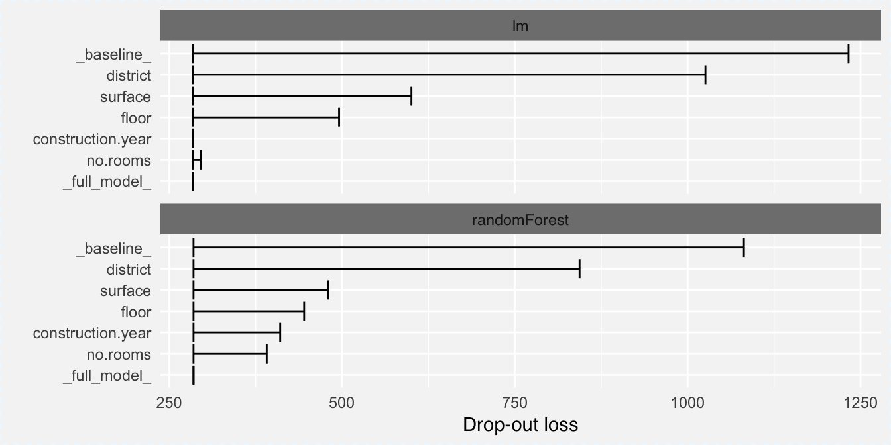
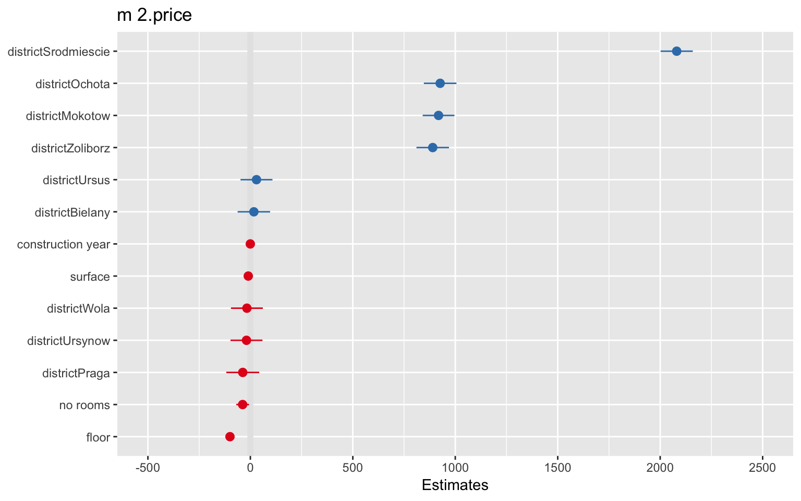

3.2 Feature importance
Explainers presented in this section are designed to better understand which variables are important.
Some models, such as linear regression or random forest, have a build-in model specific methods to calculate and visualize variable importance. They will be presented in Section 3.2.2.
Section 3.2.1 presents a model agnostic approach on the basis of permutations. The advantage of this approach is that different models can be compared within a single setup.
3.2.1 Model agnostic
Model agnostic variable importance is calculated by means of permutations. We simply substract the loss function calculated for validation dataset with permuted values for a single variable from the loss function calculated for validation dataset. This concept and some extensions are described in (Fisher, Rudin, and Dominici 2018Fisher, Aaron, Cynthia Rudin, and Francesca Dominici. 2018. “Model Class Reliance: Variable Importance Measures for Any Machine Learning Model Class, from the ’Rashomon’ Perspective.” Journal of Computational and Graphical Statistics. http://arxiv.org/abs/1801.01489.).
This method is implemented in the variable_importance() function. The loss function is calculated for:
- the original validation
data. It is an estimate of a model performance and will be denoted as_full_model_, - validation data with resampled
ylabels. It is a kind of worst case loss when model are compared against random labels. It will be denoted as_baseline_, - validation data with single variable being resampled. It tells us how much is gone from the model performance after the selected variable is blinded.
Let’s see how this function works for a random forest model.
## variable dropout_loss label
## 1 _full_model_ 276.0107 randomForest
## 2 no.rooms 384.1662 randomForest
## 3 construction.year 393.6847 randomForest
## 4 floor 446.0324 randomForest
## 5 surface 463.1788 randomForest
## 6 district 848.6363 randomForest
## 7 _baseline_ 1097.4217 randomForest
Here the loss_root_mean_square() function is defined as square root from averaged squared differences between labels and model predictions. The same method may be applied to a linear model. Since we are using the same loss function and the same method for variable permutations, the losses calculated with both methods can be directly compared.
## variable dropout_loss label
## 1 _full_model_ 276.6243 lm
## 2 construction.year 276.5978 lm
## 3 no.rooms 284.5154 lm
## 4 floor 498.7674 lm
## 5 surface 636.1856 lm
## 6 district 995.1654 lm
## 7 _baseline_ 1249.2592 lmIt is much easier to compare both models when these values are plotted close to each other. The generic plot() function may handle both models.
Figure 3.1: Model agnostic variable importance plot. Right edges correspond to loss function after permutation of a single variable. Left edges correspond to loss of a full model
What we can read out of this plot?
- left edges of intervals start in
_full_model_for a given model. As we can see. the performances are similar for both models, - length of the interval corresponds to variable importance. In both models the most important variables are
districtandsurface, - in the random forest model the
construction_yearvariable has some importance, while its importance for linear model is almost equal to zero, - the variable
no.rooms(which is correlated withsurface) has some importance in the random forest model but not in the linear model.
We may be interested in variables that behave differently between models (like construction_year) or variables that are important in both models (like district or surface). In the next section we introduce explainers for further investigation of these variables.
NOTE: If you want variable importance hooked at 0, just add type = "difference" parameter to variable_importance().
vi_lm <- variable_importance(explainer_lm, loss_function = loss_root_mean_square, type = "difference")
vi_rf <- variable_importance(explainer_rf, loss_function = loss_root_mean_square, type = "difference")
plot(vi_lm, vi_rf)Figure 3.2: Model agnostic variable importance plot. Right edges correspond to difference between loss after permutation of a single variable and loss of a full model
3.2.2 Model specific
Some models have build-in tools for calculation of variable importance. Random forest uses two different measures - one based on out-of-bag data and second one based on gains in nodes. Read more about this approach in (Liaw and Wiener 2002Liaw, Andy, and Matthew Wiener. 2002. “Classification and Regression by randomForest.” R News 2 (3):18–22. http://CRAN.R-project.org/doc/Rnews/.).
Below we show an example of a dot plot that summarizes default importance measure for a random forest. The varImpPlot() function is available in the randomForest package.
Figure 3.3: Built-in variable importance plot for random forest

It is easy to assess variable importance for linear models and generalized models, since model coefficients have direct interpretation.
Forest plots were initially used in the meta analysis to visualize effects in different studies. . At present, however, they are frequently used to present summary characteristics for models with linear structure / created with lm or glm functions.
There are various implementations of forest plots in R. In the package forestmodel (see (Kennedy 2017Kennedy, Nick. 2017. Forestmodel: Forest Plots from Regression Models. https://CRAN.R-project.org/package=forestmodel.)) one can use forest_model() function to draw a forest plot. This package is based on the broom package (see (Robinson 2017Robinson, David. 2017. Broom: Convert Statistical Analysis Objects into Tidy Data Frames. https://CRAN.R-project.org/package=broom.)) and this is why it handles a large variety of different regression models.
Figure 3.4: Forest plot created with forestmodel package

In the package sjPlot (see (Lüdecke 2017Lüdecke, Daniel. 2017. SjPlot: Data Visualization for Statistics in Social Science. https://CRAN.R-project.org/package=sjPlot.)) one can find sjp.xyz() function to visualize coefficients of a xyz model (like sjp.glm() for glm models) or a generic wrapper plot_model().
Figure 3.5: Model coefficients plotted with sjPlot package
Note!
The forestmodel package handles factor variables in a better way while the plots from sjPlot are easier to read.